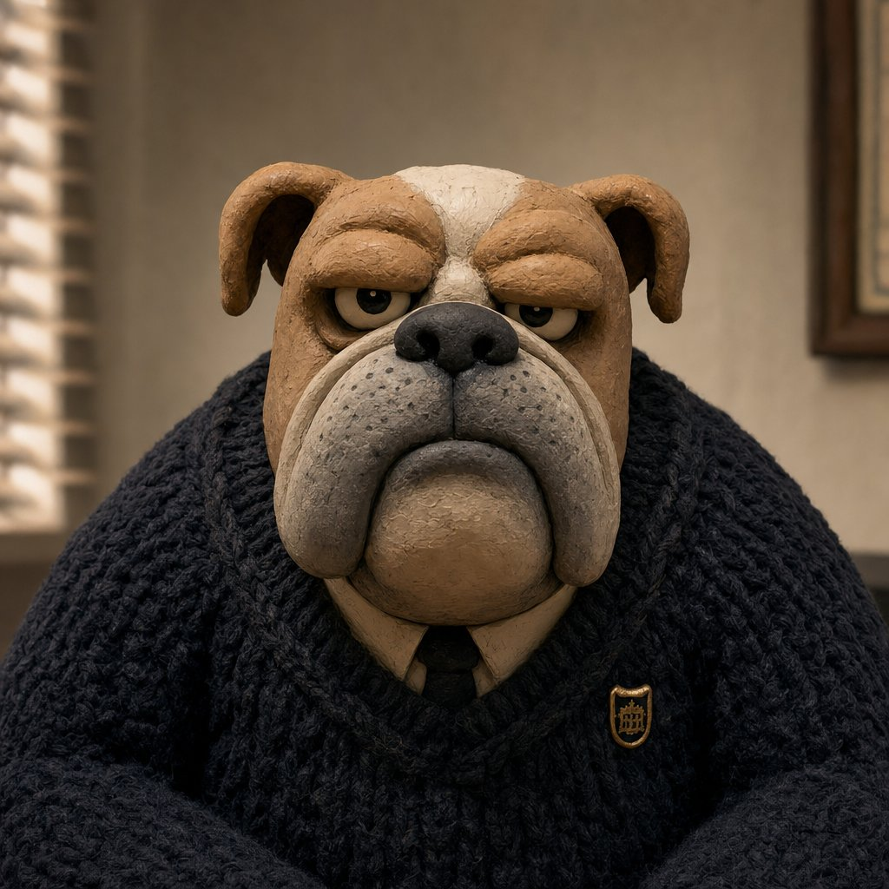
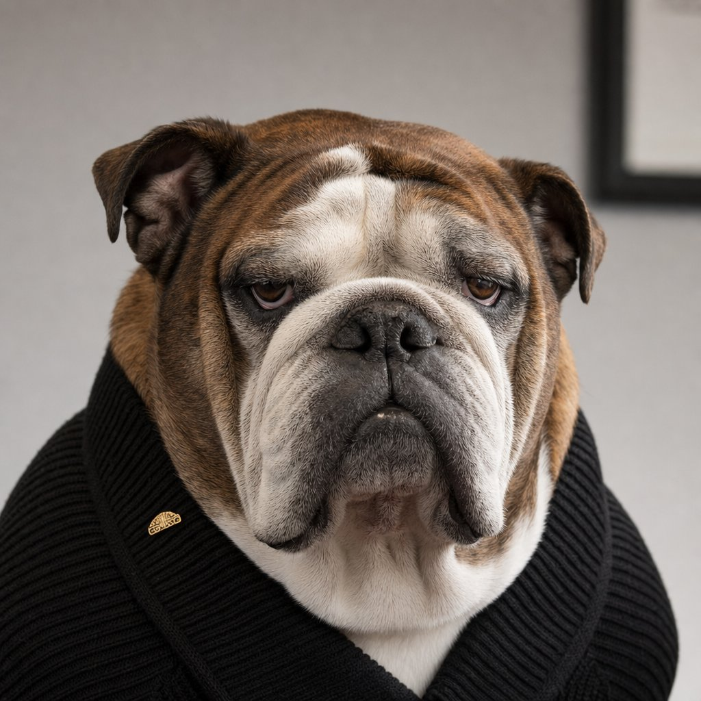
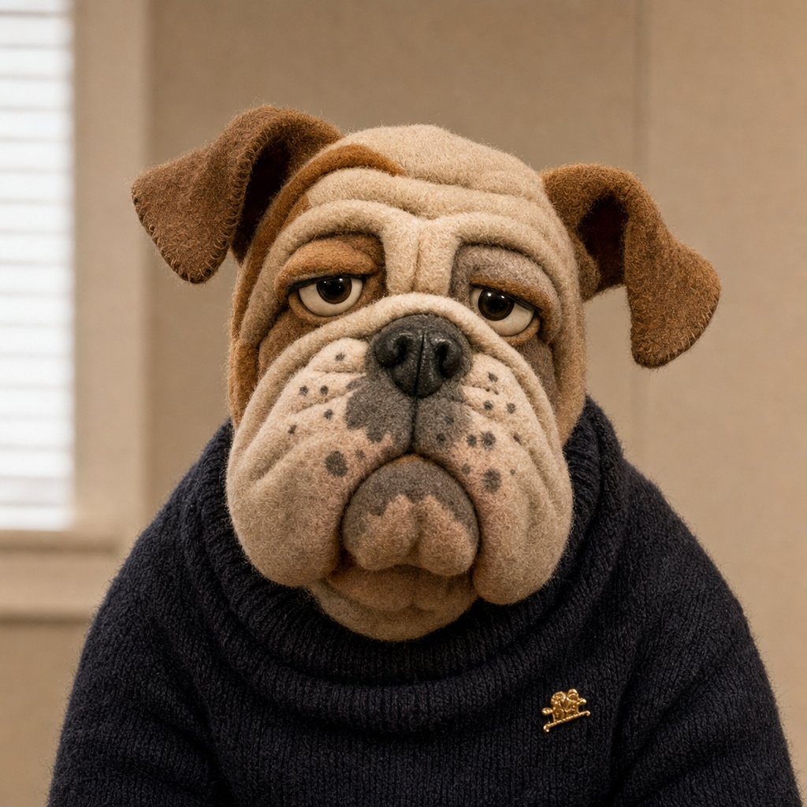
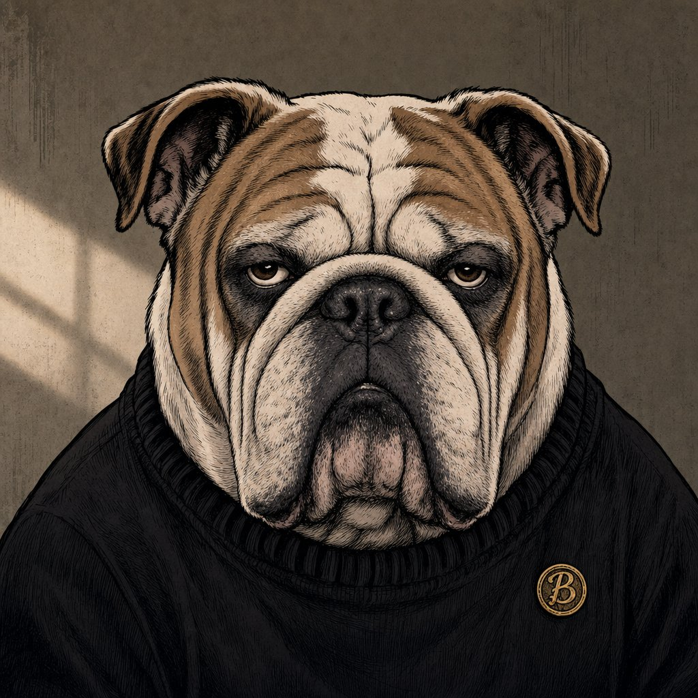
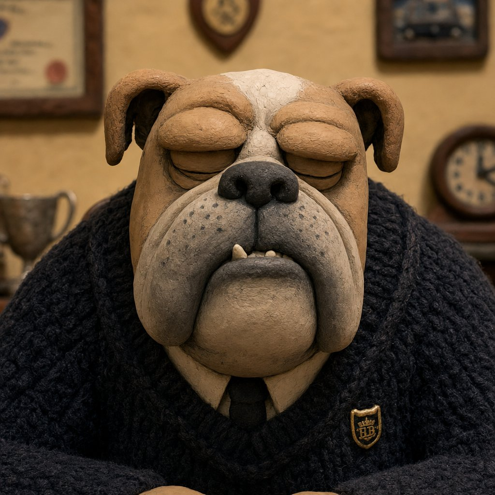
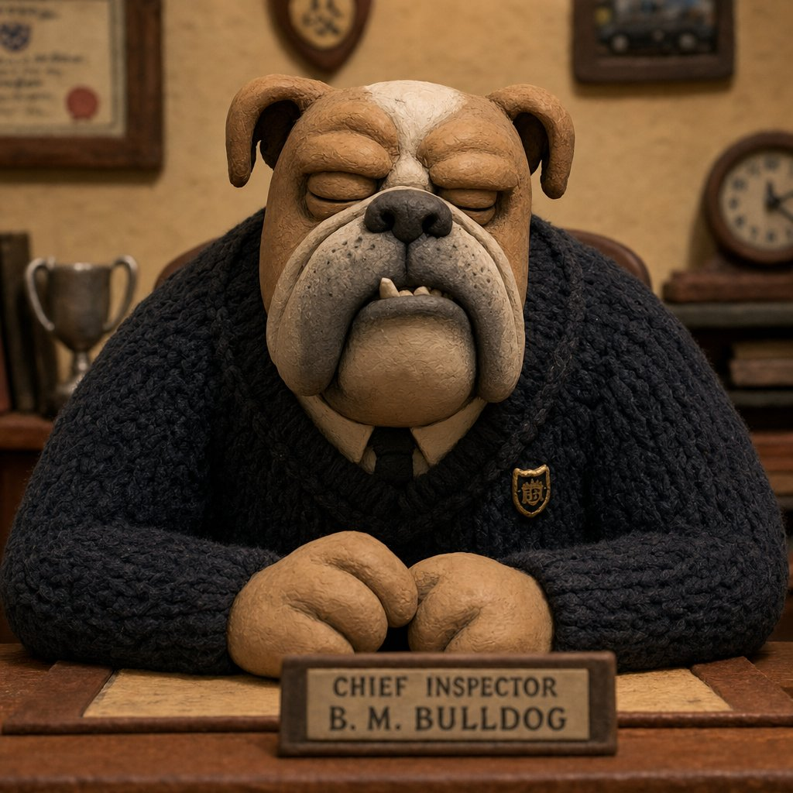
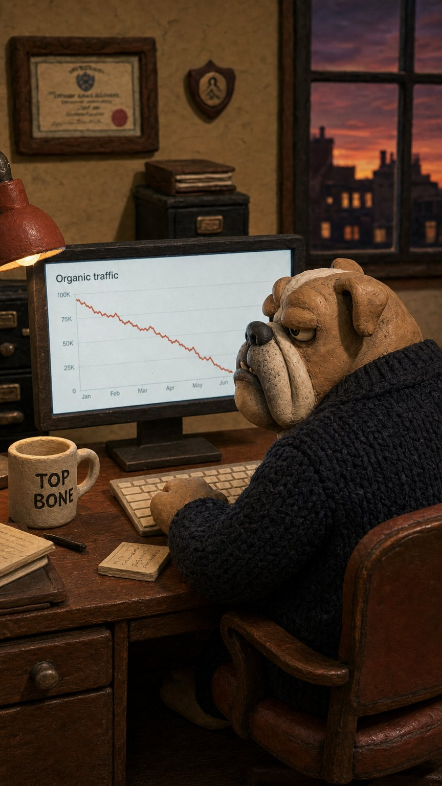

Charlie is now a fully fictional English bulldog — no real-dog reference behind him — so the art style has to carry identity, ownability, and the entire anti-slop defense on its own. We tested the finalists head-to-head and put the evidence in front of a five-lens judge panel. The verdict was a sweep: claymation for everything, daily. This page is the decision record.
Claymation (style 03) for all output: video shorts, reaction stills, LinkedIn strips, reply-game ammunition. It swept all five judging lenses (9/10 on each) with no disqualifying flag — the only style that survives both existential tests (anti-slop craft and distinctive-asset ownability) while also winning the daily-utility tests (thumbnail legibility, deadpan register, production consistency).
Photoreal (01): retired. Eliminated, not outscored — it rendered three different dogs across three test images, dies at thumbnail size, and at feed size it is functionally Gong's Bruno (a real bulldog, adjacent category): an active misattribution liability with no answer to "why not film a real dog?" Felt (06): no role — everything it does, clay does better, and it breaks the never-cute guardrail. Comic (05): one gated static-editorial role (blog headers, deck art) — never video, never daily.
The old two-lane system (clay hero / photoreal reactive) was built on a real dog existing: photoreal meant "a real dog reacting," and monthly real-Charlie photos were the anti-slop anchor. With a fictional bulldog, photoreal inverts into the highest-risk lane — a photorealistic genAI dog passing as real is exactly what a slop-literate marketer audience punishes — while clay's handmade-look artifacts read as intentional craft. One locked style also maximizes fluent-device compounding: every post re-encodes one memory structure instead of splitting across two.
Ten style samples reviewed; six eliminated on documented grounds; four finalists tested head-to-head with matched renders — same prompts, style swapped — then judged by five independent evaluators, each restricted to a single lens, plus a synthesis chair.
| Lens | Clay | Photoreal | Felt | Comic | Deciding observation |
|---|---|---|---|---|---|
| Feed legibility (96/48px) | 9 | 4 | 7 | 6 | Clay's sculpted brow shelf reads "annoyed" even at 48px; photoreal's brindle coat swallows the eyes into a noisy blob; felt drifts "sleepy/sad"; comic's hatching collapses into an angry raccoon-mask. |
| Anti-slop craft | 9 | 2 | 7 | 8 | Clay's thumbprint texture + miniature set-building is an authored-craft alibi, and stop-motion choppiness is in-genre for video. Photoreal self-incriminates ("why not film a real dog?"). Felt's fine fibers are prime i2v shimmer territory. |
| Distinctive asset | 9 | 2 | 8 | 6 | Photoreal is functionally Gong's Bruno at feed size — probable active misattribution in an adjacent category. Clay's brow-ridge + graphic eyes are proprietary codes that survive at avatar size. |
| Register fit (dry, never cute) | 9 | 7 | 5 | 7 | Silent British deadpan is claymation's native register. Felt reads soft-toy (violates the never-cute guardrail). Comic runs grim rather than funny. Photoreal reads pet-influencer warmth. |
| Production viability | 9 | 4 | 7 | — | Drift test: clay held one identity across repeated generations; photoreal produced effectively three different dogs (brindle is a fingerprint). Clay's matte macro-forms are the most i2v-forgiving surface. |







| Style | Disposition | Grounds |
|---|---|---|
| 03 · Claymation | PRIMARY — everything | Unanimous five-lens sweep. Native dry-British register, thumbnail-proof legibility, lowest drift, most i2v-forgiving, strongest craft alibi. |
| 05 · Comic | Gated static editorial | Densest per-image craft; static-only. Blog headers, deck art, occasional LinkedIn one-offs. Gate: pass a consistency test first; register runs grim, so always ship with joke context. Never video, never daily. |
| 01 · Photoreal | Retired | Bruno collision, thumbnail illegibility, worst drift (three dogs in three renders), highest slop exposure with no real dog behind it. Archive kept at assets/prepro/_retired-photoreal/. |
| 06 · Felt puppet | No role | Second on most lenses, first on none; violates never-cute; fiber shimmer risk in video. Fully dominated by clay. |
| 02 · Pixar CGI | Eliminated pre-test | Kid-cute register undercuts B2B credibility; the single most "generic AI mascot" aesthetic of 2024–26 — maximum slop association. |
| 04 · 2D vector | Eliminated pre-test | The crowded default of B2B brand social; least personality; nothing ownable. |
| 07 · Ghibli watercolor | Eliminated pre-test | Tonally soft against a dry character — and culturally radioactive: Ghibli-fied AI became the symbol of AI-slop appropriation in 2025. Worst possible signal to this audience. |
| 08 · Anime | One-off tool only | Retained as a rare over-the-top reaction gag, per the original one-pager. |
| 09 · Pixel art | One-off tool only | Stunt/retro moments; emotional range collapses at sprite resolution. |
| 10 · Mid-century flat | Brand-identity system only | Functions as a logo treatment, not a performing character. |
By mid-2026, "Aardman-style claymation" is itself a one-prompt genAI trope. A slop-literate marketer may read the clay coat as costume rather than craft — "AI cosplaying stop-motion" — collapsing the very defense it was chosen for, while courting style-attribution to Wallace & Gromit instead of the brand (fame-without-linkage, the #2 kill risk).
Why it loses: the objection attacks clay's ceiling, not its floor. The alibi holds if — and only if — continuity is enforced: the same pin, the same sweater, the same sets, the same sculpt in every post. A one-prompt trope is a style; a character with locked recurring codes across months is a property. That is executable discipline (below). Photoreal's problem, by contrast, is structural and has no mitigation. The dissent survives as four standing risks:
A fictional character's identity is nothing but its codes. These are now hard-coded into every render prompt (preproduce_charlie.py) and are the fluent-device assets every post must re-encode. Changing any of them is a brand decision, not a creative choice.
MEDIUM stop-motion clay puppet · visible thumbprint texture · hand-built miniature sets · practical in-set lighting · painted backdrops HEAD tan with a white blaze down the muzzle · graying jowls · heavy sculpted brow ridges (the expression engine) EYES HEAVY-LIDDED, always. flat graphic whites, black-dot pupils. never wide open. never glossy. the half-closed eye IS the brand. WARDROBE navy chunky cable-knit sweater · white shirt collar · dark tie · ONE small gold shield-crest lapel pin (never varies) WORLD his office desk · conference room · break room · commute · webcam. indoor, office light or screen glow. never a park. never a beach. TEXT no readable in-scene text unless the joke requires it — then the exact string is specified and must render legibly, or the prop text is added post-hoc as an authored overlay. POSE BAN wide eyes · head tilts · tongue out · play bows · standing on hind legs · anything a plush toy would do
assets/prepro/_retired-photoreal/. The PDF carousel is rebuilt from clay stills. See the pre-production pack.